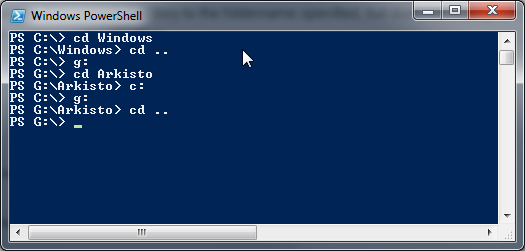
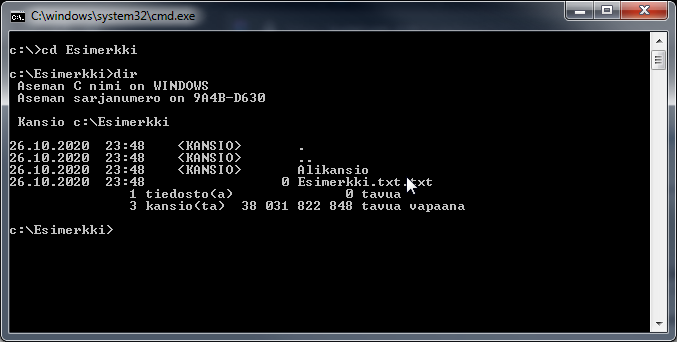
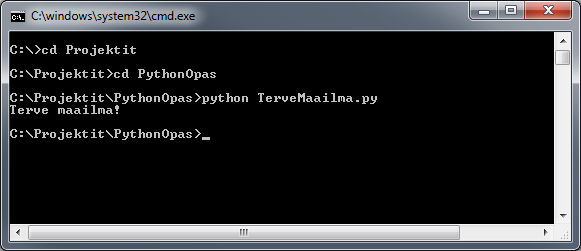

3_Komentorivi
Graafisiin käyttöliittymiin tottuneille komentorivi saattaa kuulostaa suorastaan antiikkiselta, mutta todellisuudessa komentoriviä käytetään enemmän kuin koskaan. Suurin syy tähän on kasvanut tarve automatisoida asioita erilaisten komentosarjojen avulla. Toisena syynä on halu jakaa sovellukset pienempiin helpommin hallittaviin osiin jolloin graafinen käyttöliittymä voi toimia erillisenä kokonaisuutena jonka voi tarvittaessa vaihtaa toiseen.
Monesta ohjelmasta löytyy myös sisäänrakennettu komentorivi jolla edistyneet käyttäjät voivat muokata ohjelman toiminnallisuutta, automatisoida toistuvia vaiheita ja päästä käsiksi toiminnallisuuksiin jotä ei perus käyttöliittymästä syystä tai toisesta löydy. Esimerkkejä: Blender3D, Photoshop, Pelit ja niiden modaustyökalut,
Komentorivillä navigointi
Hae ja avaa käynnästä valikosta joko cmd, Powershell tai cmder. Nämä toimivat melko samalla tavalla joten valinnalla ei ole sikäli hirveästi väliä.
Komentorivillä navigointi tapahtuu cd komennolla (Change directory). Kirjoittamalla komentorivillä cd c:/ komentorivi siirtyy tietokoneen c:/ juureen. Kirjoittamalla tämän jälkeen cd Windows siirtyy komentorivi c:/ asemalta löytyvään Windows kansioon. Takaisinpäin pääsee kirjoittamalla cd .. jolloin komentorivi siirtyy takaisin Windows kansiosta c:/ aseman juureen.
Jokaisella asemalla on oma erillinen “nykyinen asema”(Current directory) johon voi navigoida kirjoittamalla aseman nimen ja kaksoispisteen esim. g:

Nykyisen kansion sisällön saa selville kirjoittamalla Dir jolloin komentoriville tulostuu kaikki kansion sisällä olevat alikansiot ja tiedostot.

Komentorivi Vinkkejä
Python kooditiedoston ajaminen komentoriviltä
- Luo kansio Python opas jonnekin helposti löydettävään paikkaan.
- Suosittelen sijaintia C:/Projektit/PythonKansio
- Kopio ja liitä muistoon(Notepad) alla oleva koodinpätkä.
Python 3
print("Terve maailma!")
- Tallenna tiedosto Projektit/PythonOpas kansioon nimellä TerveMaailma.py
- Avaa komentorivi cmd tai Powershell Windows käynnistä valikosta.
- Navigoi komentorivillä kansioon PythonOpas
- Suorita komentorivillä seuraava komento
python TerveMaailma.py

Komentoriville pitäisi tulostua perinteinen “Hello World” suomeksi. HelloWorld esimerkki on yleensä ensiaskel uuden ohjelmointikielen opiskelussa. HelloWorld esimerkit voivat kertoa yllättävän paljon ohjelmointikielestä ja esimerkin suorittaminen on yleensä hyvä testi jonka perusteella voi päätellä, että kaikki on ainakin tähän mennessä kunnossa.
Periaattessa tämä on kaikki mitä tarvitaan python koodin kirjoittamiseen ja ajamiseen, mutta seuraavassa osiossa